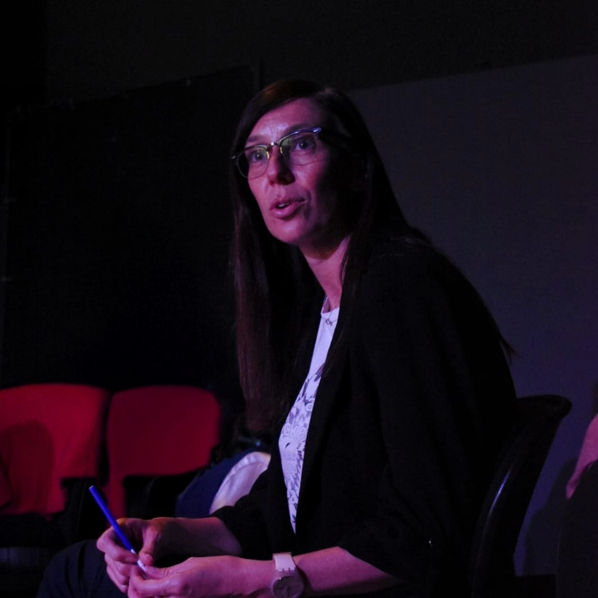
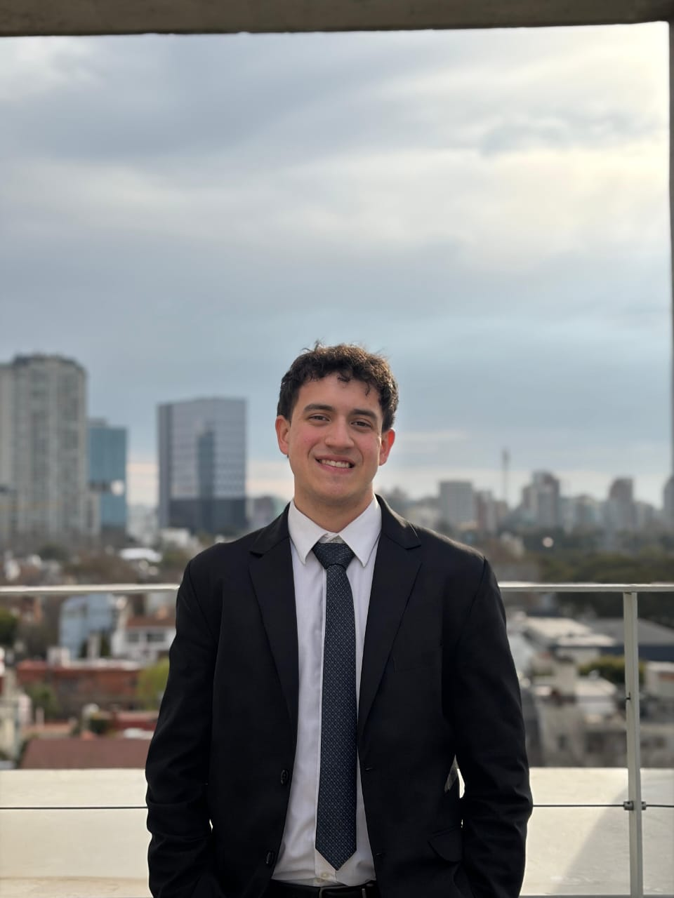
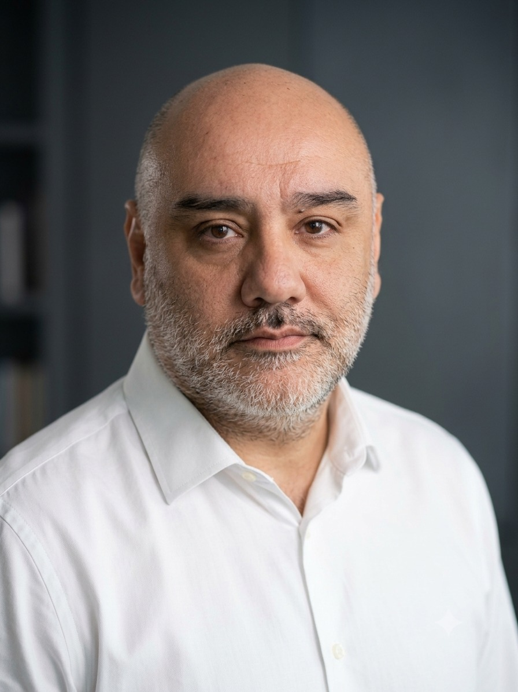

Cristian Chavarini
Director
[Nuestro equipo]
Un equipo interdisciplinario que combina gestión pública, tecnología, datos, diseño e inteligencia artificial para transformar desafíos municipales en soluciones concretas.
Director

Sub-directora
Gestión y Políticas públicas

Analista de datos

Data analytics
Desarrollo y diseño web
Desarrollo web y ArcGIS

Desarrollo GIS
IA y automatización